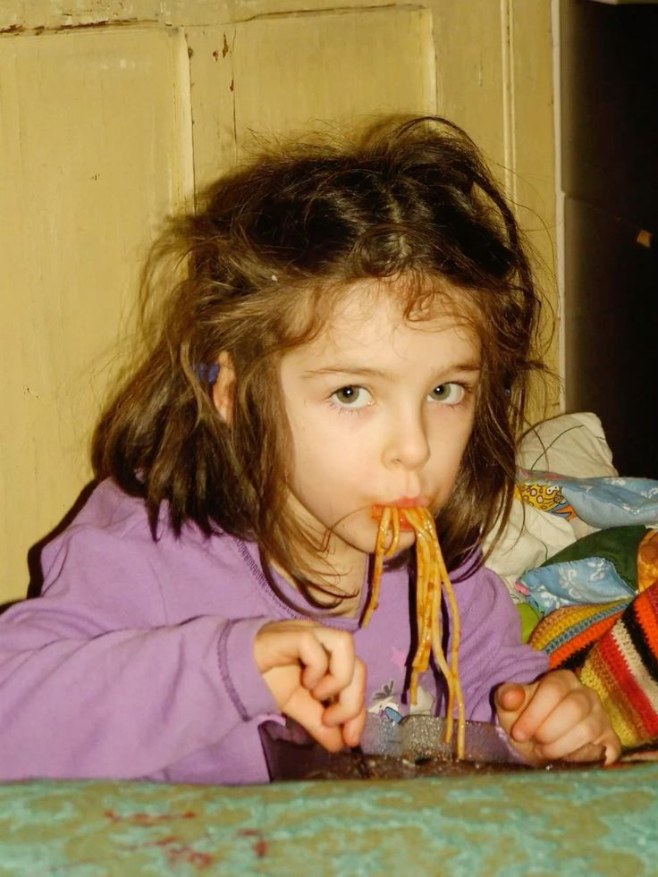

Hope in the Shadows: A Suicide Awareness Blog
Topic: social science by John Julius Serrano, Tasie Dominigo, Zeth Mendoza, Gerard Dustin Beltran, Roxanne Salamanca.
Suicide is a complex and tragic issue influenced by mental health struggles, social pressures, trauma, and feelings of isolation. It remains a leading cause of death, especially among young people, affecting individuals from all walks of life. Unfortunately, stigma and limited access to mental health resources often prevent people from seeking help. Prevention focuses on raising awareness, reducing stigma, providing support, and fostering safe, open conversations about mental health. Together, communities and professionals can make a difference and save lives.
Stories
Taylor's story: Raising awareness after my brother died by suicide.
Taylor shares his story about how his life has changed since his brother, Kirk, tragically took his own life. He tells us about what Kirk went through and how since then, he has chosen to focus his energy on raising awareness around mental health and looking after his mental well-being. Taylor shares the message that it is okay to reach out when you are not feeling okay.

Mom whose daughter died by suicide says parents need to talk with their kids
Here's a longer version of that sentence:
"A young girl, who was tragically a victim of relentless bullying, found herself struggling with feelings of worthlessness and isolation. Despite her bright personality and potential, the constant torment from her peers took a toll on her mental health, leaving her in a state of emotional despair. The bullying she endured not only affected her self-esteem but also her ability to trust others, making it harder for her to seek help or find solace in the people around her."
Educational Content
Has your child talked about taking their own life?
Talking to your child about suicide may be the toughest and most uncomfortable conversation you ever have, but it may also be the most important. Listening makes your child more comfortable about sharing thoughts and feelings that are upsetting and deeply personal.
Conversations we should have with our kids.
One of the best things we can do is give our young people the power to talk about mental health issues and topics as challenging as suicide without shutting the door. Even if your child is doing well, this is a powerful opportunity to help your child see it is okay to be emotionally open and could help them talk openly with friends.
Talking to your kids about suicide.
Talking to your child about suicide may be the toughest conversation you ever have, but it may also be the most important.
Myths About Suicide: Depression is a Sign of Weakness
Depression is a real and serious condition. It is not much different than a chronic health condition in its ability to impact someone’s life. It can have both emotional and physical symptoms and make life very difficult for those who have it.
Myths About Suicide: Moving Beyond Common Misconceptions
When it comes to suicide, there’s a lot of competing information that makes it hard to tell myth from fact. But knowing the facts may allow us to take life-saving steps to help our children.
Myths About Suicide: Ending Mental Health Stigma
Stigma is defined as a mark of disgrace that sets a person apart. Unfortunately, the stigma surrounding mental illness creates shame, distress, and reluctance to get help.
Facebook’s Safety Initiative Helps Prevent Suicide
Facebook has been collaborating with suicide prevention organizations for more than a decade to identify users at risk for suicide and to provide them with crisis resources.